Cat Breads: an SDF experiment that became Lane's playground, voiced through the Comfy Cloud MCP
Eight beats, about 55 seconds. It starts as an experiment in modelling with signed distance fields, finds its subject in Lane's index cards, grows into a lounge for her iPad, and goes silent until one Claude Code session with the Comfy Cloud MCP gives every cat a voice and the room its music. Narrated in your cloned voice, first person.
≈ 55 s · 1920×1080 · 30 fpsComfy Demo Studio (Remotion), dark canvas theme, Nodey hostsNarration: your Chatterbox clone on Comfy Cloud, one mood per lineLane: her cards and first name only
Timeline
0:000:050:100:150:200:250:300:350:400:450:500:55
Picture
Intro
1 Experiment
2 Her cards
3 Build
4 Lounge
5 MCP session
6 Voices
Outro
Narration
1
2
3
4
5
6
7
Music (ACE-Step loop)
fades in as the ACE-Step call completes · ducked under narration
Cat voices (cues)
narration linemusic beda cat's voicebell preview inside the MCP beatBeat lengths follow the measured takes (0.5 s lead, 0.8 s tail); these are estimates at 2.6 words per second.
Beats
0:00 – 0:03
Cat Breads
An SDF experiment that became Lane's playground. Voiced through the Comfy Cloud MCP.
Comfy Cloud MCP
Nodey waves
Beat 0 · intro · 3 s · title card
Title
No narration. No music yet: the video opens quiet on purpose.
Picture
Studio intro card on the ink canvas with the lime dot grid: title "Cat Breads", subtitle as shown, Nodey waves in.
Sound
Silence.
0:03 – 0:09
renders/gallery.pngstill
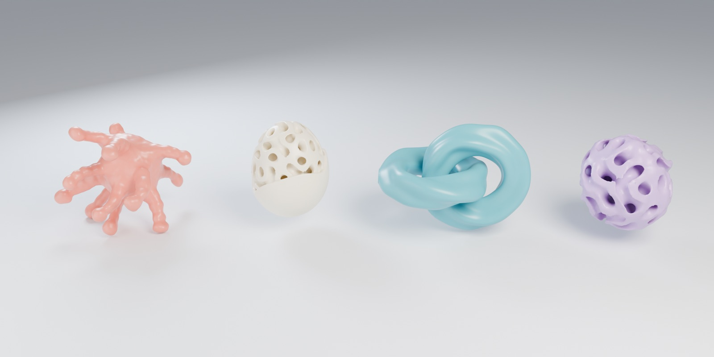
This started as an experiment: modelling with signed distance fields in Blender.
Beat 1 · the experiment · ≈ 6 s · still, Ken Burns
The experiment
"This started as an experiment: modelling with signed distance fields in Blender."
natural12 words · ≈ 4.6 s spoken
Picture
The SDF studies from sdf.py and shapes.py: the pod, the gyroid egg, the linked rings, the lattice ball. A slow drift from left to right across the row.
Sound
Narration only.
0:09 – 0:16
cards_photo.jpgstill
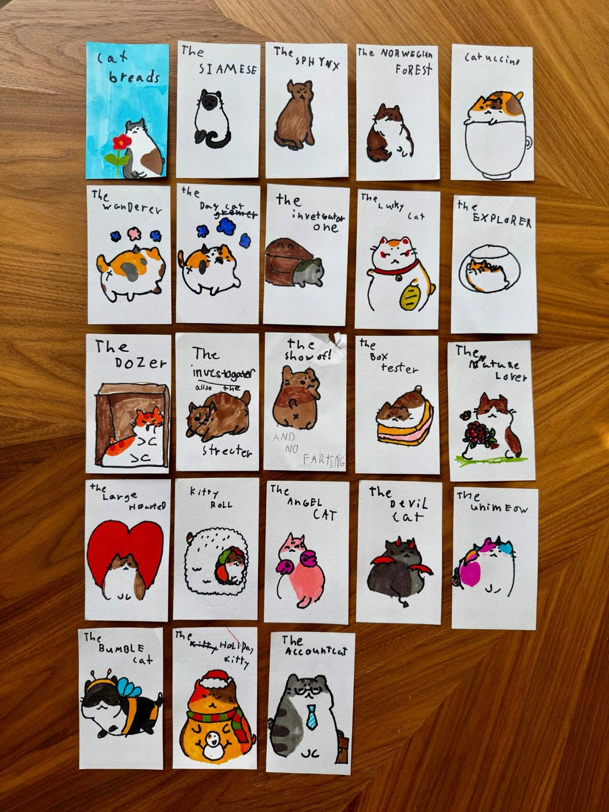
Then my daughter Lane drew twenty-three cats on index cards…
Beat 2 · her cards · ≈ 7.5 s · still, Ken Burns
Her cards
"Then my daughter Lane drew twenty-three cats on index cards, and the experiment had its subject."
amused16 words · ≈ 6.2 s spoken
Picture
A landscape crop of the photo (the top rows, about 2.1:1), drifting slowly across the drawings so the marker lettering reads.
Sound
Narration only.
0:16 – 0:24
renders/cards/cat_breads_cards.jpgstill
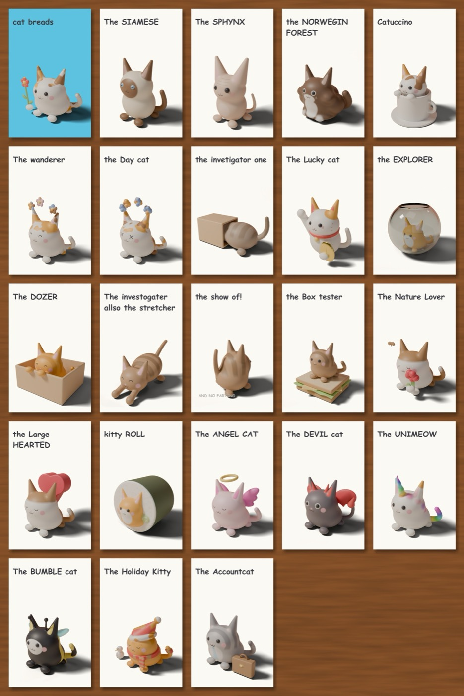
With Claude Code, each card became a cat: the Lucky Cat, the Bumble Cat, the Show Off.
Beat 3 · the build · ≈ 7.5 s · still, match cut
The build
"With Claude Code, each card became a cat: the Lucky Cat, the Bumble Cat, the Show Off."
natural16 words · ≈ 6.2 s spoken
Picture
The Blender card renders, cropped to exactly the same rows as the photo, so the cut from beat 2 lands as a match: her drawings turn into the renders in place.
Sound
Narration only.
Check
The card says "the show of! AND NO FARTING". The line says "the Show Off"; say if you want the footnote in.
0:24 – 0:30
localhost:8765 · ?demo=loungelocalhost
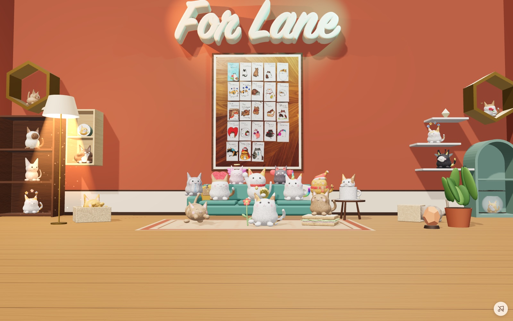
It grew into a playground for her iPad. Finished, and completely silent.
Beat 4 · the lounge · ≈ 6 s · video
The lounge
"It grew into a playground for her iPad. Finished, and completely silent."
quiet12 words · ≈ 4.6 s spoken
Picture
A slow dolly-in on the finished room, the "For Lane" sign and the framed cards in frame, cats idling and blinking. Captured from the real page with a scripted demo mode; the mute button is hidden.
Sound
Narration only, in the quiet voice. The room stays silent so the next beat can bring the sound in.
0:30 – 0:42
claude · ~/Code/blndrClaude Code
> The lounge needs sound. Give every cat a 1.5 s voice that fits its card, and a loop of lounge music, through Comfy Cloud.⏺ comfyui-cloud · partner_generate type "audio" · model "elevenlabs/sound-generation"
prompt "a small brass bell jingling twice, cute, close" · duration 1.5
⎿ submitted → completed · saved to the asset library · /api/s/…⏺ comfyui-cloud · partner_generate prompt "a fat bumblebee buzzing past, cartoonish" · duration 1.5
⏺ comfyui-cloud · partner_generate prompt "a bubbly underwater echo, playful" · duration 1.5
… 20 more voices⏺ comfyui-cloud · run_template audio_ace_step_1_5_checkpoint · "warm lo-fi lounge, soft keys, brushed drums" · 60 s
⎿ completed · ambient.flac
⏺ bash ffmpeg … silenceremove, loudnorm → web/audio/<Name>.mp3 ×23, ambient.mp3
Comfy Cloud MCP
So I asked for sound. With the Comfy Cloud MCP, Claude called ElevenLabs…
Nodey points at the callout
Beat 5 · the MCP session · ≈ 12 s · terminal replay
One session, all the sound
"So I asked for sound. With the Comfy Cloud MCP, Claude called ElevenLabs for a voice per cat and ACE-Step for the music, without leaving the editor."
calm28 words · ≈ 10.8 s spoken
Picture
A Claude Code session replayed line by line, timed to the narration: your prompt, three real partner_generate calls with their results arriving, the ACE-Step run_template, then the ffmpeg trim. Lime accent on the MCP lines; a callout and Nodey mark the first one. Rendered as a scene in the studio (crisp text, deterministic timing), not a screen recording; the lines quote a real call I will run on camera during the build.
Sound
Narration. The Lucky Cat's bell plays once when its result line lands. The music fades in the moment the ACE-Step line completes and stays under everything from here.
0:42 – 0:52
localhost:8765 · ?demo=voiceslocalhost
Tap a cat, and it answers.
Beat 6 · the cats answer · 10 s · video
The cats answer
"Tap a cat, and it answers."
excited6 words · ≈ 2.3 s spoken, then the cats take over
Picture
Six cats pressed in turn about 1.4 s apart; each hops or wiggles and the whole room turns to look at it. The press order is below.
Sound
Each cat's real voice from web/audio at the exact press time (the capture logs every press against a marker frame). Music ducked.
0:52 – 0:57
Built with Claude Code. Voiced through the Comfy Cloud MCP.
cloud.comfy.org · for Lane
Try the Comfy Cloud MCP
Nodey celebrates
Beat 7 · outro · 5 s · title card
Outro
"Even this narration is my voice, cloned through the MCP."
confident10 words · ≈ 3.8 s spoken
Picture
Studio outro card with the headline, the URL, a small "for Lane", Nodey celebrating.
Sound
Narration, then the music comes up to close.
Press order in beat 6
The three named in the script come first so their sounds land on familiar names; the other three round out the beat.
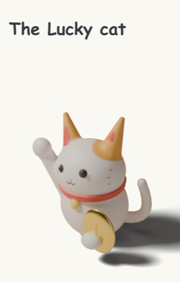
1 · 0:45.2Lucky Catbell jingle
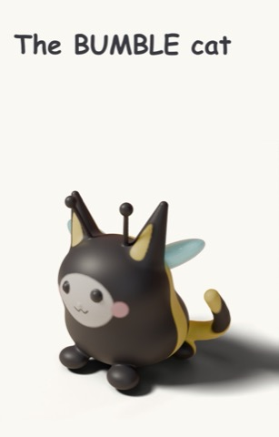
2 · 0:46.6Bumble Catbee buzz
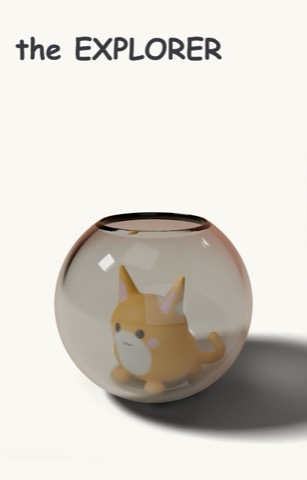
3 · 0:48.0Explorerbubbly echo
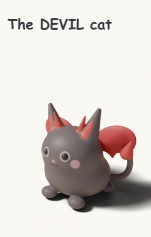
4 · 0:49.4Devil Catits voice from web/audio
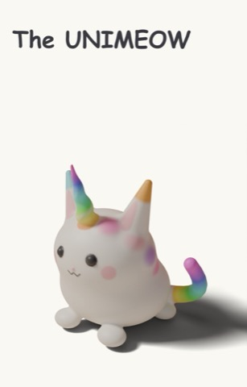
5 · 0:50.4Unimeowits voice from web/audio
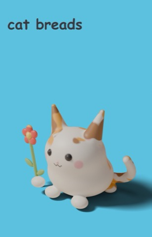
6 · 0:51.2Mascotits voice from web/audio
Your voice
Narration comes from your Chatterbox clone on Comfy Cloud (the miles-voiceover skill): each line is generated three times against the mood reference shown on its beat, checked with Whisper for wrong words and breathy tails, then the best take is trimmed and levelled. GPU time only, no partner credits, nothing stored with a voice vendor. I will play you line 1 before generating the rest.
What I need from you
The seven lines and their moods. Edit any wording you like; the beats stretch to fit. 100 spoken words now.
Length. With the experiment beat added the cut runs about 55–57 s against the 50 s target. To get back to 50, the cleanest cut is merging beats 1 and 2 into one split frame (shapes on the left, cards on the right) under one line; say if you want that, or if 55 s is fine.
Lane on screen. Her first name appears in line 2, on the sign in beats 4 and 6, and as "for Lane" on the outro. Say if any of those should go.
Reference images
The SDF studies · renders/gallery.png: pod, gyroid egg, linked rings, lattice ball, from shapes.py. Beat 1.Lane's cards · web/cards_photo.jpg, also the framed picture in the lounge. Beat 2.The rendered set · renders/cards/cat_breads_cards.jpg, same layout, spelling kept. Beat 3.The lounge as the capture browser sees it · a 1600×1000 Playwright frame from the performance probe (full Chromium with Metal: ~120 fps). Beats 4 and 6.
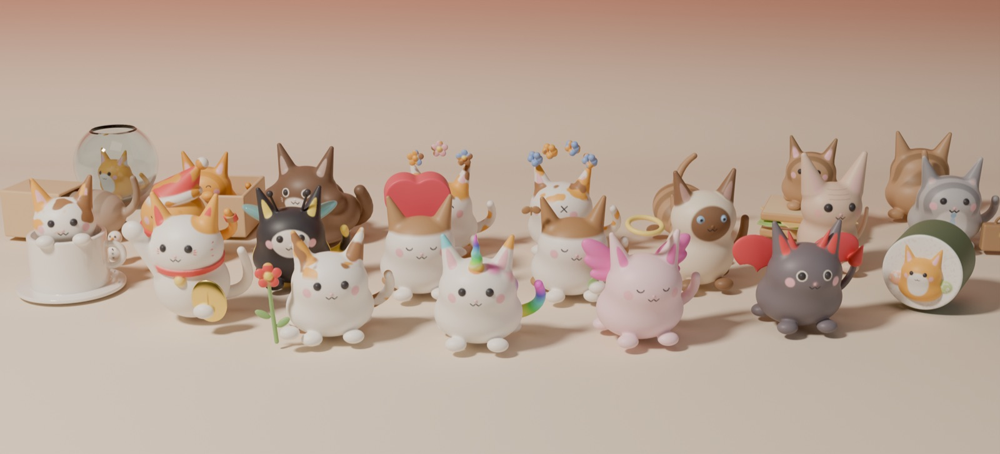
The hangout render · renders/cats/hangout.png, the Blender group shot. Not in the cut; an alternative for beat 3 if you prefer cats to cards.
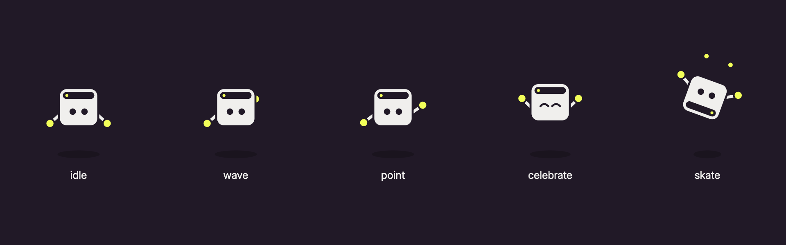
Nodey · the studio's mascot poses: waves on the intro, points in beat 5, celebrates on the outro.
The script in one place
This started as an experiment: modelling with signed distance fields in Blender.beat 1 · natural · 12 words
Then my daughter Lane drew twenty-three cats on index cards, and the experiment had its subject.beat 2 · amused · 16 words
With Claude Code, each card became a cat: the Lucky Cat, the Bumble Cat, the Show Off.beat 3 · natural · 16 words
It grew into a playground for her iPad. Finished, and completely silent.beat 4 · quiet · 12 words
So I asked for sound. With the Comfy Cloud MCP, Claude called ElevenLabs for a voice per cat and ACE-Step for the music, without leaving the editor.beat 5 · calm · 28 words
Tap a cat, and it answers.beat 6 · excited · 6 words
Even this narration is my voice, cloned through the MCP.outro · confident · 10 words